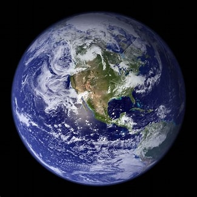

Земля
Планета Земля - самая крупная планета среди земного класса планет (в нее входят Марс, Венера и Меркурий). Единственная планета Вселенной, на которой проживают живые организмы. Размер (диаметр) планеты: 12 742 км. Вес Земли: 5,972E24 кг. Орбита Земли — схема движения планеты вокруг звезды Солнце.